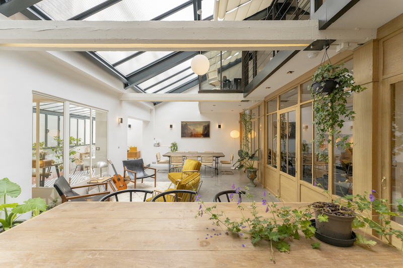

2010
DEBUT SEMINAR AT STUDIOS LA FABRIQUE
2010
MWTM IS FORMED
2015
MWTM ONLINE COMMUNITY IS LAUNCHED
CHAPTER 1
REALLY REALLY DIFFERENT
John Storyk and his famous Walters-Storyk Design Group have over five decades built thousands of recording studios around the world, including iconic facilities like Electric Lady Studios and Jungle City Studios in New York, The Church Studios in London, and private workspaces for Jay-Z, Bruce Springsteen, Jack Antonoff, Whitney Houston, Celine Dion, Bob Marley, and countless more.
JOHN STORYK AT WORK
When the request came in at the end of 2020 for Storyk and WSDG to build a studio for Mix With The Masters in Paris, it was in the first instance regarded as business as usual. However, Storyk very quickly realized that the project was anything but, and this was not even taking the issue into account of constructing a studio during a pandemic, not to mention from the other side of the Atlantic. More challenges soon became apparent.
“I got the initial call from Eddie Kramer,” remembered Storyk, “who recommended that we take on this project. In 1969, Eddie changed my life when he invited me to design Jimi Hendrix’s studio in New York, Electric Lady Studios. Eddie became a life-long friend, and we’ve done many projects together. When Eddie calls, I take his suggestions very seriously. Because of MWTM’s significance, the project had caught my attention in any case, and I expected it to become an important facility in our industry.”
EDDIE KRAMER AND JOHN STORYK
ELECTRIC LADY
“After talking with Victor and Maxime about what they wanted, it became clear that this would not to be a typical studio, and that the process of making it would involve a number of challenges. First of all, it was not only to be a world-class studio, but also an instructional and teaching studio. On top, it needs to serve as a backdrop for their famous instructional videos—basically the studio also needs to be a film set! The functionality of the studio is really complicated. Most studios are not set up to do all this.”
“Secondly, building a recording studio in any city always presents challenges - Paris is no exception! The studio site is a complicated one and the MWTM program added more hurdles. My favourite element has to be the lift and disappearing console! This was quite the surprise - a first for me - but it soon became an amazing learning experience.”
“At the same time, they also said, ‘we want a modern studio, that looks a little retro.’ That was a constant theme. Wood and curtains and a seventies look. I’ve been involved in thousands of studios, with lots of different clients, and this was a strange request, that I never had before.”
“It took me a while to fully get in sync with the vision that Maxime and Victor had for the rooms. It made for a really interesting ride, and when we got to the end of it, it was worth it. We ended up with something that’s new and contemporary, and yet also respects the vintage side.”
PK PANDEY , JOHN STORYK, MAXIME LE GUIL, DIRK NOY
CHAPTER 2
COOL HOME STUDIO
The way John Storyk describes it, Maxime Le Guil and Victor Levy-Lasne had a clearly-formed masterplan for Rue Boyer. However, it turns out that their vision came into focus over a long period of time, as a rather unexpected side-effect of the professional needs of Maxime.
Maxime has a parallel career as a Grammy-nominated engineer, mixer and producer, in addition to his involvement with MWTM. He’s worked with acts like Radiohead, Melody Gardot, Morrissey, Christine and the Queens, Hans Zimmer and many more. And working at this level requires reliable access to a top studio, as Maxime explains…
“A few years ago, I was looking at building a studio for myself, because I had moved locations a few times, and have at times been studio homeless. At one point I worked in the old Plus 30 Studios in Paris, then I was in the US, and when I came back to Paris I built a home studio, which was great. After that I moved to another building, and I started to feel a real need for stability for me as a mixer. So my initial idea was to buy a place that I could convert into a studio.”
MAXIME WORKING AT THE CONSOLE
“Around the same time Victor and I were looking for offices for MWTM, so we decided to try to find a building big enough for offices, videos suites and editing rooms, and also for my personal studio. In the middle of 2018, we found and bought a place that met our requirements, in the 20th arrondissement, on the east side of central Paris.”
“We knew we wanted my studio on the ground floor and the MWTM side of things above. To cut a long story short, the studio project evolved from being a soundproofed and acoustically treated room just for me, nothing too expensive, to a state of the art studio complex. It grew from my super cool home studio to Rue Boyer!”
THE 20TH ARRONDISSEMENT
RUE BOYER
BREAKING GROUND
CHAPTER 3
CREATING MORE OPPORTUNITIES
As the concept of the studio took shape, the MWTM team realised that the idea also offered them several additional possibilities, which dramatically extended their vision.
“In the process of making the enormous amount of videos that are on our website,” Victor explains, “we found that it is really hard to find a good studio environment that’s suitable for filming. When we shoot videos in New York or Los Angeles, or other places, we tend to move around with a local team, and the first problem is simply scheduling, which takes away some of the magic of the in-the-moment story-telling.”
“Also,” continues Maxime, “we came to the conclusion that many studios are not good for filming at all. It’s a combination of things. Sometimes the geometry of the room is awkward, sometimes it’s the lighting, or the colour of the fabric. The fabrics can look really nice in real life, with nice beige, white or grey textures, but they are very difficult to capture well on camera.”
Once Maxime and Victor recognised that they had a unique opportunity to create a studio from scratch that is also a perfect filming location, they decided that it made sense to make it suitable for other purposes as well.
“It was about creating opportunities,” says Victor. “Of course, the studio would first and foremost need to work as a top studio, where leading studio professionals are entirely comfortable. But we also wanted a multi-purpose space. Being able to film in the studio was an obvious additional purpose, as was the fact that it needs to be a learning space. Plus we reckoned that it could be a place for people to connect and socialise. We envisioned a space that could also work as a hang!”
“Finding the right layout for the building and the studio took quite a bit of time,” adds Maxime. “We actually ended up modifying the structure of the building a lot. Because the MWTM section also involved video and audio editing rooms, we built a third floor, and for the ‘hang’ aspect, a terrace at the top of the building. All this took forever, because we’re in the middle of Paris, and you need to get building permits and deal with neighbours, associations, and things like that. We had to convince everybody around us! And of course, construction always takes longer than you think.”

THE CONTENT CREATION SUITE
The vision for the 120m2 ground floor had by now extended to something completely different than a straightforward mixing space for Maxime. However, the original idea was not abandoned, as he explains. “We knew we needed to have a studio A and a studio B, which do not touch, so work can be done on entirely different projects at the same time. The idea was to have two separate working studios, so if one studio is busy, I can use the other.”
“We also always knew there would be one smaller studio space, in a room that cannot be modified, because it has bearing walls that cannot be torn down. That room would be Studio B. The real challenge was what to do with Studio A: before soundproofing we had 100m2 to work with, which works out as roughly 85m2 of useable space. The problem was that this is not enough to have a big control room and a big live room.”
CHAPTER 4
BUILDING A STUDIO IN A PANDEMIC
Art, science, and practical considerations on the ground come together in the making of any studio, and commonly lead to considerable challenges. By the end of 2020, the Mix With The Masters team realised that their studio project had become so demanding that it was time to engage the very top people in the world. Eddie Kramer suggested John Storyk and the Walters-Storyk Design Group.
After a number of meetings between the MWTM team and WSDG, work on the project began in February 2021. Despite hopes to the contrary, the pandemic would remain in full force for another year. With Storyk stuck on the American East Coast, this greatly affected the project, as he recalled…
THE OTHER SIDE OF THE WORLD
WESTLAKE, NY
“As if it wasn’t difficult enough to design a studio with all these different requirements in this building, with extremely demanding criteria, it was even more difficult to manage the project long-distance without being able to come to the site. On the positive, we discovered that we could do it.”
In fact, WSDG did manage to visit the site. WSDG currently has offices and representations in the US, Latin America, Asia, and Europe, with approximately 60 people working for the group. In Europe, the company has a presence in Barcelona, Berlin, and Basel, and particularly the latter office, run by Dutchman Dirk Noy, proved invaluable.
“Logistically we ran the project from our Basel office,” explained Storyk, “because it’s just a train ride away from Paris. This made it much easier to provide the much-needed construction supervision. All the design and documentation work took place in the New York office, with lead architect and senior partner Romina Larregina as our project manager. We’ve done projects in the Middle East, China and South America in similar fashion. So when the covid era arrived and everybody had to stay at home and use Zoom, we were already fully set up to work like this.”
DIRK NOY
A EUROPEAN CONNECTION
Dirk Noy, WSDG Partner and Director of Applied Science and Engineering, with a focus on Architectural Acoustic Consulting, elaborated, “There are very few projects that we do that are within driving distance. We’ve also always been an international operation, and at the forefront of remote collaborations for 10 or 15 year. Skype was a revolution! When covid came along, we said, ‘OK, let’s just activate two more Zoom accounts.’ However, the pandemic did complicate a number of things, because there are key moments in a project’s life when you have to be on site.”
“The initial phase is critical, as it involves assessing the site. Are the wall systems in good condition? What are the existing conditions and dimensions? What are the issues concerning acoustic decoupling and sound isolation? We used very experienced builders from Vienna, because we had worked with them before, and they knew what we wanted. They’re extremely familiar with our detailing and expectations. This also made communication and supervision via Zoom easier.”
“But I still had to visit the site a number of times to make sure everything went according to plan, and then there were acoustic measurements to be taken when the studio was almost finished. I went to Paris probably 10 times in total. Because of the pandemic, there were times when this was really complicated, with us having to work our way around lockdowns and quarantine requirements, and so on. For one journey from Basel to Paris I was literally the only passenger on the train!”
CHAPTER 5
SOLVING A COMPLICATED PUZZLE
According to Noy, the pandemic added yet more practical challenges. “Every project does not only have a financial budget, but also a time budget. This project took longer than anticipated, because we had problems sourcing some of the basic materials. For example, it sounds ridiculous, but at one point we had a really hard time getting a particular type of wooden planks. It meant having a near-constant struggle with the project timeline.”
A SUM OF MOVING PARTS
WSDG tends to work with prefabricated advanced acoustic materials, which turned out to be of great help with a project constructed at a distance and during a pandemic.
“With most of our projects today,” explained Storyk, “we try to utilize as many pre-fabricated acoustic assemblies as possible. It’s the smart way to build a studio. In the case of this studio, the acoustic materials were manufactured to our specifications by a company in the UK called RPG. The materials were then shipped to Vienna, where they were reconfigured, and from there brought to Paris and installed by our Vienna builders, Hutter Acustix.”
"The work that was required was very complex," added Noy, "and done under the critical supervision of Team Löffler, who for many years have been our go-to studio builders in Europe. There are many elements hidden behind the surfaces of the finished studio. All the fabrics at the back are covering low-frequency treatments, like perforated plates of wood with very specific holes in them. It’s not easy to install those without destroying the acoustic effect they are designed to have. You need to have done this before, which again is why we used the team from Vienna.”
“Another challenge was that we wanted the HVAC [heating, ventilation, air-conditioning] systems to be as invisible as possible. This meant that the prefabricated wooden panels did not only have to conform to the desired retro look, but they also needed to have dual acoustic and HVAC functionality. There also were some existing HVAC subsystems that we had to integrate and make as invisible as possible. Plus we designed invisible routing for the cables, and hid several subwoofers. There were the Atmos speakers, and the lighting system to deal with as well. We had to fit many pieces of a complicated puzzle together.”
AESTHETICS AND ACOUSTICS
CHAPTER 6
REALISING AN IMPOSSIBLE VISION
When running seminars at La Fabrique in the south of France, MWTM always makes good use of the enormous control room and large live spaces at the studio. Clearly, given the restricted space at the Paris location, the assumption was that it was physically impossible to build a large control room and a large live room there, particularly with significant space taken up by a large desk. However, MWTM and WSDG managed to square this circle, using a completely novel approach.

JAYCEN JOSHUA SEMINAR
STUDIOS LA FABRIQUE
“Unless you have a crazy amount of money,” says Maxime Le Guil, “most studios in cities have to make a choice, and they end up with a small control room and a large live room. In today’s in-the-box environment, it means that many of these live rooms are seldom used, and have been turned into lounges filled with big sofas. At the same time, in the studios in the US where we did one-day seminars the control rooms were always too small.”
“One solution would have been not to have a desk, but actually, we realised from our experience of the seminars that desks are great teaching tools, whether it’s an SSL, a Neve, a Behringer, or a Mackie. Even though the participants may not be using desks themselves in their own work, when they see things done on a desk it makes the recording and mixing process come much more alive.”
TOM ELMHIRST SEMINAR
STUDIOS LA FABRIQUE
“Many of the world’s greatest in-the-box mixes have been done by people who trained on consoles, and many professionals still like working on desks. So we felt that it’s essential to have desks in both studios. We also did not want one of these hybrid consoles, likely the SSL Duality or the new Neve Genesys, that try to replicate the workflow of an old desk, but at the same time be modern. If we went vintage, we wanted to go full vintage.”
“For Studio B we chose an API 2488, which comes from the Record Plant, and which was serviced and returned to its original shape by Simon “Poodle” Pool, who maintains Nigel Godrich’s API desks. For the main room we decided on a 48-channel E-series SSL 4000, which came from London, and was restored to optimal condition by French engineer Gil Martini. The 4000 is easier to maintain than a 9000, and we like the E-series for cosmetic reasons, because it’s black.”
CHAPTER 7
SQUARING A CIRCLE
After subtracting space for soundproofing, a drum room and a small programming suite, Studio A turned out to be 50m2 large. The way the MWTM team squared the big live room vs big control room circle is likely to become the most famous and talked-about feature of the studio.
“We had the idea of making the desk disappear underneath the floor, using an elevator,” explained Le Guil, “Like Batman! To do this, we had to dig a hole underneath the floor the size of the desk, as if installing a swimming pool. We dug into the foundation, reinforced the hole with concrete, made it waterproof, installed an elevator, placed the desk on it, so it can go down, and made it possible to close the floor above it. It means we can turn the control room into a live room, with Studio B as the control room for Studio A.”
DIGGING BELOW GROUND
It’s a piece of ingenious thinking and engineering, which, understandably, posed several challenges, in terms of construction, acoustics, guiding the desk wiring, providing access underneath the desk to be able to maintain the elevator and electrics, and so on. While John Storyk and WSDG were initially rather worried about the disappearing desk, they managed to turn it to their advantage.
“It actually gave us the opportunity to do some really interesting things,” explains Storyk. “We realized that the hole underneath the console, when it is in use, can be used as a low-frequency trap. So we had perforations made in the wooden floor panel that the desk rests on, which becomes an absorber.”
“This technique is essentially a tuned resonator, working to resolve the SBIR effect (speaker boundary interference response), which eliminates the low frequencies bouncing off the floor. It means that the floor underneath the desk is an asset for us with respect to low frequency control. And when the desk is down, we made the cover that goes over it reflective, which helps when the room is used as a live space.”
A CONSOLE THAT DISAPPEARS
CHAPTER 8
THE RESEARCH
The way Storyk and WSDG handled the disappearing desk situation touched on the principal and most difficult aspect of building a recording studio: acoustic design. Amazingly, until not so long ago, there were very few ways to predict a room’s acoustic behaviour. It wasn’t until the nineties that tools were developed that can reliably predict acoustic behaviour above the Schroeder frequency, roughly 200-300Hz.
TECHNICAL DRAWINGS BY WSDG
The behaviour of sound waves below the Schroeder frequency, however, has remained the great unknown, until very recently. WSDG has developed pioneering software called NIRO that can predict the behaviour of low end in a room, and Rue Boyer is one of the first studio designs in which it was applied. Storyk elaborates on NIRO and how it was applied at Rue Boyer elsewhere in this issue.
NIRO, and the desk-on-an-elevator construction, are examples of Rue Boyer's ground-breaking design and construction. But the quest for excellence and innovation by the team that built the studio did not stop there, as Maxime Le Guil explained.
“We spent hundreds of hours researching wiring, acoustics, electronics, gear, electricity supply, the best lighting for videos shoots, the best set-up for the studio’s Macs, and so on. We really tried our best to leave nothing to chance. We also did a lot of research into how the big studios around the world solved a variety of issues, and you can say that our new studio is a synthesis of all the knowledge that we gathered.”
“We had to get through some barriers to get all the information, because some studios did not want to share their secrets. But many of the masters on our roster shared their expertise and knowledge, and we talked to the chief tech engineer of Capital Studios in LA, and in Paris we talked to Gang Recording Studio, Motorbass Studio, and what used to be known as Plus 30 Studios.”
ALAN MEYERSON
“Alan Meyerson, who runs crazy 3000-track sessions for Hans Zimmer, helped us getting the best configuration for the Macs, that’s suitable for Atmos as well. We also built our own cool XLR panel, and so on. We researched every brand of cable, and questioned the choice of every single wire. We sourced information from everywhere we could, and the studios are a distillation of everything we found, and we’re really keen to share all this with our community.”

AUGSPURGER DESIGN VARIATIONS
CHAPTER 9
FITTING THE MONITORS
Another crucial aspect of studio design is the selection and integration of the main monitoring system. Rue Boyer Studio A’s main monitors were designed and fabricated by PK Pandey and his company Symphony Acoustics, under license of George Augspurger. Storyk explained how the monitors were fitted into the MWTM studio.
“The monitoring requirements in here were actually somewhat normal for a large state-of-the-art mix room. The trick was to put them in the right position. First of all, they’re really great, Augspurger-style monitors. They’re incredible, and signed off by George himself. The main issue was to make sure that their acoustical centers are at ear level.”
EAR LEVEL MONITORING
“For years, people had big monitors, first Westlakes, then Augspurgers, in the wrong position. They were all above a big piece of glass, and speakers that are in the wrong position will rarely sound good. After many years of wondering why this was the case, our industry finally determined it was the reflections off the console that caused a time domain anomaly that of course would translate into the frequency domain.”
“One way of solving this issue is to have the glass that looks at the live area placed on the side. It’s a solution I love, but it would have not worked here. Instead we placed the monitors at ear-level on the sides of the glass, in angled frames. In that position, the monitors can behave the way they’re supposed to behave. We also installed several additional subs, which are part of the same system as the mains and are purely there to provide a smoother low end throughout the control room. We think of the additional subs along with the Augs mids and highs as one monitoring system.”
“We put a processor in the system so we can time-align all of the monitor components, as well as introduce minor EQ, as required. Because we’re always putting mains at ear level, you’re seeing more and more engineers working with them. Engineers will always work with near-field and mid-field monitors as well, but what’s the point of going through all the work of fitting mains in a tracking control room if you don’t trust them? And to be able to trust them they need to be at ear-level, and well-calibrated.”
The Augspurger monitors at Rue Boyer are also designed to fit in with the studio’s general aesthetic, and the Amphion surround speakers are a superb addition with their signature white speaker cones gently dotted around the room. The look and feel of the studio and equipment has been thoughtfully considered. The same can be said of other spaces in the studio, including the large lounge, with a big sofa and a full glass roof.
“One should never forget that a studio is a workspace,” says Storyk. “I think that part of the charm of this studio is that it is familiar and comfortable. When somebody like Jimmy Douglas, or Eddie Kramer, or any of the engineers associated with MWTM, walks in, they’re immediately in an environment that they are comfortable and familiar with. That’s the whole point. They need to be able to go to work quickly, and they need to teach. Whereas if we create a commercial studio, or a studio specifically for one person, the requirements might be very different.”
XLR PANELS
SOUNDS TO PLAY WITH
CHAPTER 10
IT WORKS!
The entire process of conceiving and building Rue Boyer took four years, from Maxime Le Guil’s early idea of building a studio for himself, until the moment one of the world’s top producers, Jack Antonoff, was allowed to try it out in the spring of 2022, before the studio was 100% finished. It made Storyk distinctly nervous.
“I was saying to myself, ‘before they open, I’m sure they’ll try it out, and invite in a few friends to do the same, and we’ll do some tuning that way.' But instead, they invited Jack in. In my view, it’s not a smart move to invite a top producer into a room that’s not even been tested yet. It’s not how I would have started using the studio! I would have walked into the shallow end of the pool first. But, as I learned during this adventure, Victor and Maxime do not have a shallow end in their pool. It’s all deep!” [laughs]
A NOTE FROM JACK ANTONOFF
- Jack
“Luckily, Jack liked the room. I called him, and asked, ‘does the room translate?’ He said, ‘yes it did.’ That was nice to hear. Tchad Blake was in here yesterday and said the same, and I heard that Jack is coming back to do more work here. So clearly, the acoustics work!”
“Is Rue Boyer my favourite studio? People regularly ask me a question like that. My answer is always, ‘my favourite studio is the one I am working on right now,’ and I stick to that answer. However, having experienced Rue Boyer myself now for a few hours, I’d say the studio is perfect. I fully expect the Paris street department to soon put some white stripes on the crosswalk in front of the studio building!”
While referencing one of the most famous studios in the world, John Storyk was talking in Rue Boyer Studio A, under the movie-shooting spotlights. It was the afternoon of the very first day that he was able to visit the studio in person. Even for a seasoned professional like him, the experience was momentous. “It was amazing to enter the studio! 52 years later I still have that nervous feeling: ‘is it going to translate?’ ‘Will the acoustics work?’ ‘Is the finished, completed space as I had envisioned it?’
Clearly, despite significant progress in studio design and the science of acoustics and its application, there is still an art to making studios, and an element of unpredictability. It’s a challenge that Storyk relishes, “I don’t want to ever lose sight of the artistic part of designing studios! If the intuitive artistic part of this process disappears, I’m out. But I don’t think it ever will.”
JOHN STORYK
RUE BOYER STUDIO A
FIRST MASTERCLASS
AT RUE BOYER
FIRST SESSIONS WITH MELODY GARDOT & PHILIPPE POWELL